Lee Elkin
I am currently a postdoctoral researcher at the Erasmus Institute for Philosophy and Economics, Erasmus University Rotterdam, in the ENCODE project led by Frederik Van De Putte. I previously worked at Jagiellonian University, LMU Munich, and the University of Paris-East Créteil. Before that, I received a PhD from the Munich Center for Mathematical Philosophy at the Ludwig Maximilian University of Munich.
My current research spans the areas of philosophy of AI, epistemology, decision theory, ethics, philosophy of cognitive science, and philosophy of science.